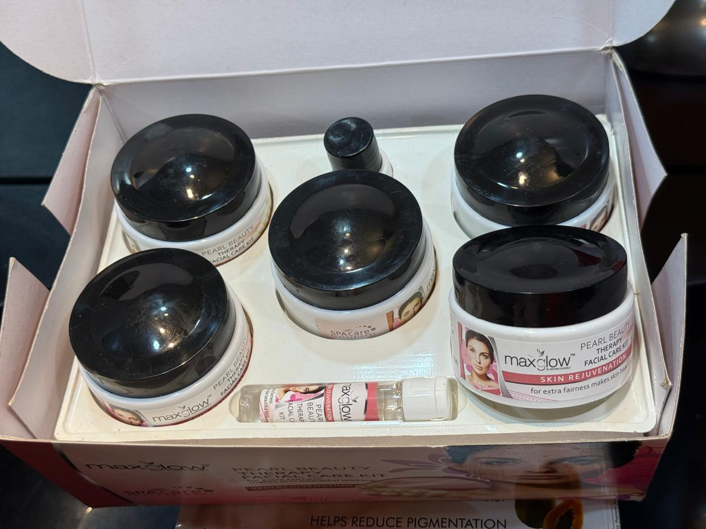
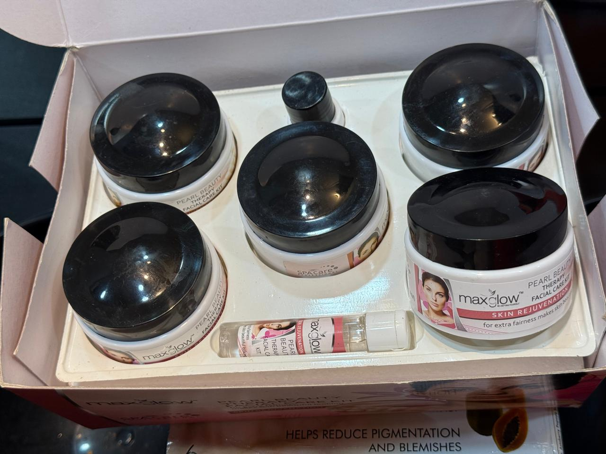
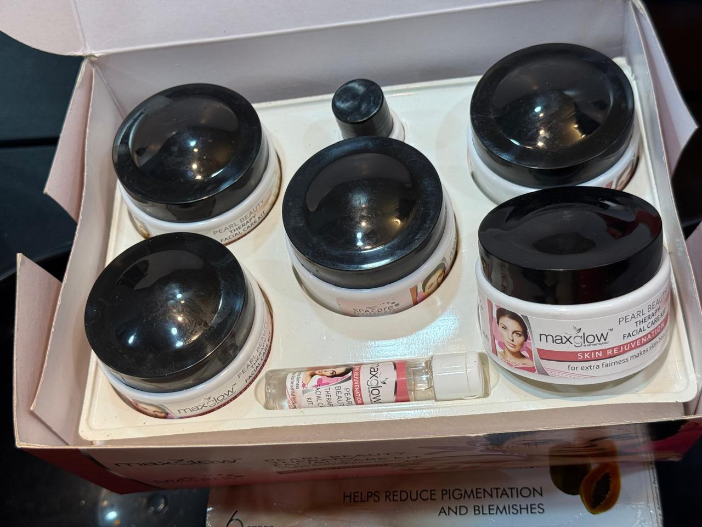
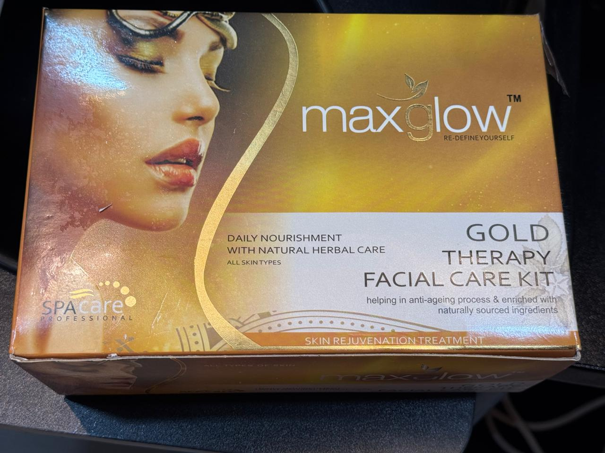
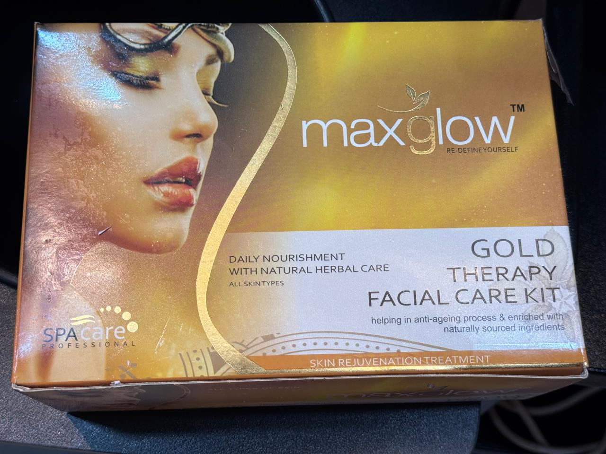
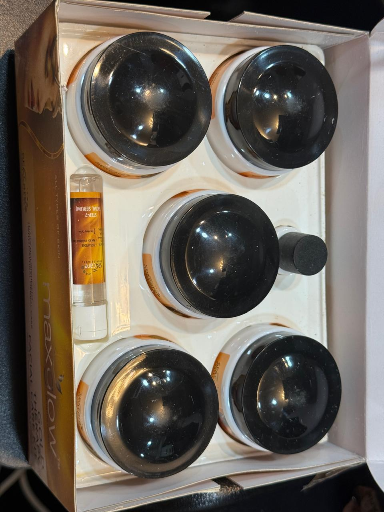

Refresh Sun-Exposed Skin with Our Herbal Anti-Tan Therapy. Your skin faces sun exposure, dust, pollution, and daily environmental stress every day. Over time, these factors can leave the complexion looking tanned, dull, uneven, or tired. Our latest Herbal Anti-Tan Therapy Facial is designed to gently cleanse, exfoliate, nourish, brighten, and hydrate the skin.
The Anti-Tan Therapy Facial is a complete five-step treatment created for skin affected by sun exposure, pollution, and everyday environmental stress.
This professional-style five-step facial treatment uses a carefully selected blend of Aloe Vera, Vitamin C, Turmeric, and botanical extracts to give your skin a fresh, healthy-looking glow. Each step prepares the skin for the next, helping create a smoother, cleaner, brighter, and more hydrated appearance.
Every step provides a relaxing spa-like experience while supporting the appearance of more even-toned and radiant skin.
We begin by cleansing the face to remove impurities, excess oil, dust, and surface buildup. This prepares the skin for the treatment and creates a clean base for exfoliation.
Next, a gentle scrub is applied to help lift away dead skin cells and improve the appearance of uneven texture. We use careful, light movements to keep the experience comfortable.
The nourishing massage cream is applied with relaxing movements. This step helps the skin feel soft and conditioned while making your facial experience calm and enjoyable.
The revitalising face pack is applied to help brighten the look of dull, sun-exposed skin. With ingredients such as Turmeric, Vitamin C, Aloe Vera, and botanical extracts, this step helps leave the skin looking refreshed and radiant.
The facial ends with a hydrating serum that helps lock in moisture. It leaves the skin feeling smooth, refreshed, and hydrated after the treatment.
Original photos of our Herbal Facial products at Face by Sumona.






To help maintain the fresh look of your skin after the treatment:
Give your skin a moment of care, comfort, and renewal at Face by Sumona Parlor. Our Herbal Anti-Tan Therapy Facial combines professional care with nourishing botanical ingredients to help your skin look cleaner, smoother, brighter, and beautifully refreshed.
Your glow begins with good care.
It includes five steps: a deep-cleansing face wash, exfoliating scrub, nourishing massage cream, revitalising face pack, and hydrating serum.
The treatment is designed for all skin types. If your skin is sensitive, irritated, sunburned, or affected by a known skin condition, please inform our team before treatment.
The facial is designed to help reduce the appearance of tan and dullness and improve the look of uneven skin tone. Results vary by individual, and regular sunscreen use is important to help protect the skin from further sun exposure.
Treatment time may vary depending on your skin’s needs and the salon schedule. Please contact Face by Sumona Parlor for the current session duration and appointment details.
Yes. Sunscreen is an important part of daytime skincare. It helps protect the skin from ultraviolet exposure and supports a more even-looking complexion.